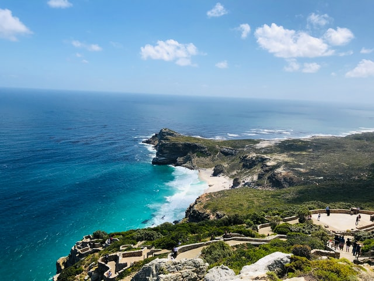
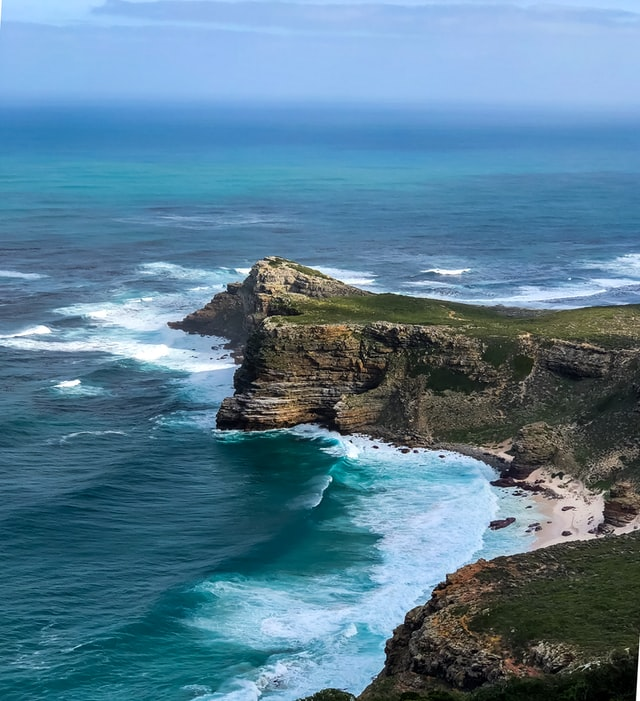

Enjoy a scenic drive along the picturesque Atlantic coastline from Cape Town to Cape Point See the historical lighthouse at Cape Point and the famous Cape of Good Hope sign. Cape Point is located just 60 kilometers from Cape Town in a nature reserve within Table Mountain National Park. It is the most southwestern tip of the African continent, and popularly referred to as the mythical meeting place of the Atlantic and Indian oceans.

